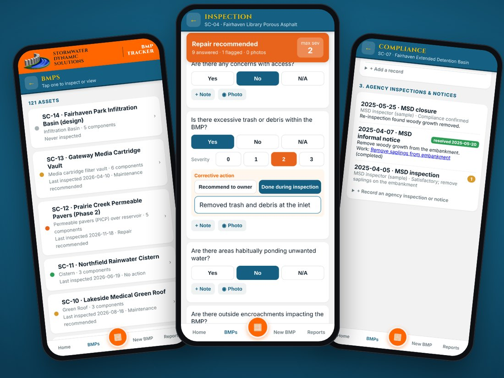
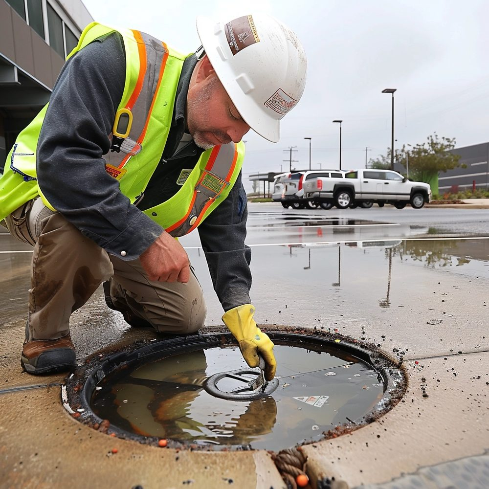
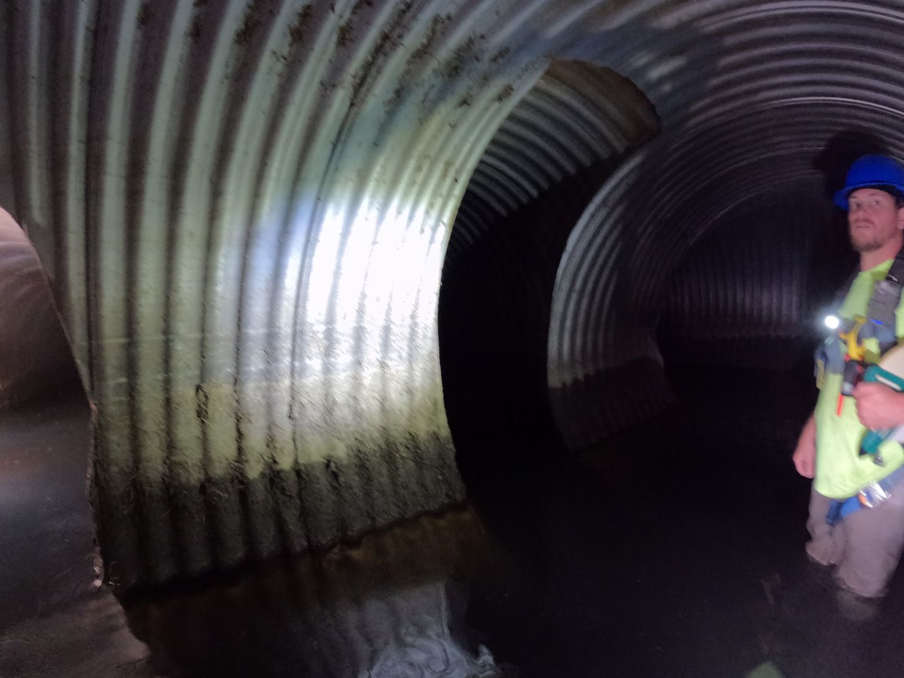

Stormwater Dynamic Solutions
Turn-Key Stormwater Solutions
Stormwater asset management for multi-site portfolios
The SDS BMP Tracker manages green infrastructure across its full lifecycle, from design and construction through turnover, inspection and maintenance, for property managers, municipalities, developers and contractors nationwide.
The SDS BMP Tracker
A proprietary green infrastructure database with desktop and mobile applications. Each stormwater asset is managed in a single continuous record, from design through long-term maintenance.
Operating in metropolitan areas across the United States, with capabilities expanding continuously.
Explore the SDS BMP Tracker
- DesignDesign data, location and maintenance requirements captured before construction.
- BuildConstruction and inspection records establish a verified as-built condition.
- TransferA complete, tagged asset record transfers to the owner at turnover.
- MaintainInspections, work orders, photo documentation and agency-ready reporting.
Solutions by organization
Property managers and HOAs
Know what is due, what it costs, and that you are covered.
Property managementMunicipalities and MS4 programs
Every private BMP. One standard. A defensible record.
Municipal programsConstruction builders
Build it. Prove it. Hand it off.
ConstructionEngineering and design firms
Designs that perform, and the data to prove it.
Engineering and designField services
Inspection, maintenance, repair and construction for every class of stormwater BMP, from bioretention to underground detention.

Inspection and reporting
Permit-based field inspections with photo documentation, corrective action plans and agency-ready reports.

Maintenance and native planting care
Sediment and debris removal, structural cleaning, erosion control and vegetation management.

Repair, design and construction
Corrective repair, remediation, retrofits and new facility construction.
Underground detention system assessment
